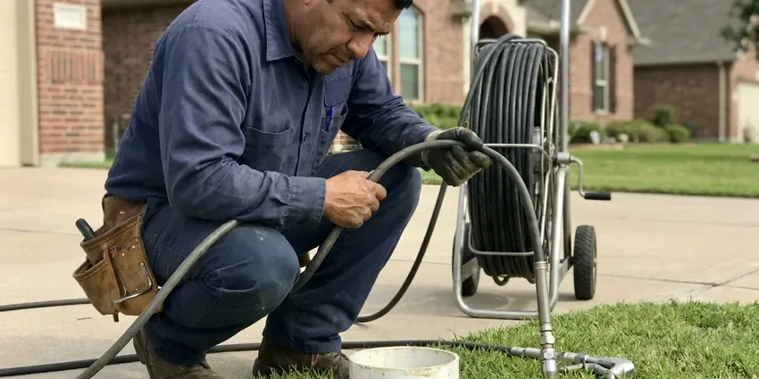

Hot Water Tank Maintenance in Sandy Springs, GA
Your water heater's relief valve has probably not been tested since install. Ours get tested by hand on every visit in Sandy Springs, GA.
- Licensed, Insured Plumbers
- Same-Day Flush Appointments
- Upfront Pricing Before Work
- Morning and Afternoon Windows

Get the Sediment Out of Your Tank in Sandy Springs, GA.
One visit drains the sediment and tells you how much anode is left.
Tank Maintenance That Fights Hard Water in Sandy Springs, GA
A water heater in a garage or attic is equipment, and equipment needs a schedule. Municipal water across much of the northern half of Georgia comes from rivers and reservoirs and tends to run soft, which is gentle on fixtures and water heaters. Every month a little more sediment settles on the floor of the tank. A yearly flush is the simplest way to protect both the efficiency of the burner or elements and the manufacturer warranty.
Work we handle every week:
- Expansion tank precharge test with a gauge
- Electric element and thermostat testing
- Drain pan and pan drain line check

Additional Plumbing Maintenance Services in Sandy Springs, GA
Our maintenance and specialty plumbing services in Sandy Springs, GA protect your home year-round and extend the life of every system.


Customers
Why Choose HGR Plumbing for Hot Water Tank Maintenance in Sandy Springs, GA?
Our trucks carry flush wands, a descaling solution rated for potable water, magnesium and aluminum-zinc anodes in the common lengths, and spare relief valves. That means one trip for most jobs. Tight closets sometimes call for a flexible link anode.
- Venting Checked, Gas units get a draft and vent connector check on each visit.
- Relief Valve Tested, We lift the T&P lever and confirm it reseats without dripping.
- Pressure Measured, We gauge static pressure and the expansion tank precharge so pressure does not spike.
Citywide Coverage
Older homes in Sandy Springs often have 40-gallon tanks in tight closets, while newer builds run 50-gallon units in the garage or attic. Both get the same checklist. A pump comes along for basements with no floor drain.
Experienced Team
Our plumbers have worked on Rheem, AO Smith, Bradford White and State tanks for years, and they know which models hide the anode under a plastic cap. It shortens the visit. They know the fragile drain valves and the tanks that need a bendable anode.
Safety-First Approach
Plumbing codes in most areas ask for a drain pan where a leak would damage finished space, and some jurisdictions add strapping or a second support. We check what your tank has. We note missing items in plain terms.
Trusted Certified Sandy Springs Plumbing Services Professionals
At HGR Plumbing, we take pride in licensed, certified plumbing services throughout Sandy Springs, GA. Credentials matter in this trade. Every repair, install and maintenance visit follows strict safety and quality rules, and the plumbers doing the work carry recognized industry credentials.
Call Us Now PHCC Plumbing Contractor Recognition
PHCC Plumbing Contractor Recognition Better Business Bureau (BBB) Accreditation
Better Business Bureau (BBB) Accreditation Angi Certified Pro
Angi Certified Pro ISO 9001 Quality Management Certification
ISO 9001 Quality Management CertificationStorage Tank Maintenance in Sandy Springs, GA
Gas and Electric Tank Checks in Sandy Springs, GA
Gas and electric tanks share the same steel shell, but the parts that wear out are different. Gas units get a burner, thermocouple and vent check. Electric units get a meter test on both elements and a look at the wiring at each thermostat, where loose terminals can scorch and melt the insulation. Both get a flush.

Yearly Maintenance Plans in Sandy Springs, GA
A maintenance plan puts your tank on the calendar so nobody has to remember. We call you when it is due. Plans cover one or two visits a year at a fixed rate, with priority scheduling if the heater fails between visits and a discount on parts like anodes and drain valves. Homes on well water or very hard water usually do better with the twice-a-year option.
Commercial Tank Maintenance in Sandy Springs, GA
Restaurants, salons, laundromats and small offices run tanks much harder than a household does, often 75 to 100 gallons cycling all day. Sediment builds up two or three times faster. We usually set commercial tanks on a quarterly or twice-yearly flush, with a dated log taped to the jacket that your insurance inspector can read. Downtime gets scheduled outside business hours.
Relief Valve Testing in Sandy Springs
Temperature and pressure relief valves on residential tanks are typically rated to open at 150 psi or 210 degrees, and they can stick shut after years of mineral buildup. We lift the test lever and watch it reseat. If it keeps dripping, we replace it. We also confirm the discharge pipe runs full size to within six inches of the floor or to an approved drain, which is what plumbing codes ask for.
Anode Rod Inspection and Replacement in Sandy Springs, GA
The anode rod is a sacrificial metal rod that corrodes so the steel tank does not. Municipal water across much of the northern half of Georgia comes from rivers and reservoirs and tends to run fairly soft, which is gentle on fixtures and water heaters. We break the hex head loose, pull the rod and check how much bare wire shows. Six inches of bare wire means replace it.
Gas Venting Tune-Up in Sandy Springs, GA
Atmospheric gas tanks vent by draft alone, so the vent connector needs upward slope of at least a quarter inch per foot and tight joints with three screws each. We check draft at the hood. On newer FVIR models, garage dust and dryer lint can clog the flame arrestor screen at the bottom, which starves the burner and makes the pilot drop out. We vacuum it clean.
Electric Element Check in Sandy Springs
Electric tanks have two elements, usually 4,500 watts at 240 volts, and the lower one does most of the work and takes most of the scale. We test each one with a meter. If the hot water quits halfway through a shower, the lower element is the first suspect. We replace it with the matching wattage and voltage.

Rheem and Bradford White Tank Service in Sandy Springs
Rheem, Bradford White, AO Smith and State make most of the tanks in local garages, and each has quirks a tech should know before opening a drain valve. Some models hide the anode under the top cover. Bradford White often uses a combo anode in the hot outlet nipple. Our trucks carry sockets for each brand.
Hot Water Tank Maintenance Near Me in Sandy Springs, GA
Same-day and next-day flush appointments are normal for us, with morning and afternoon arrival windows. You get a call half an hour before arrival. With hoses, anodes and valves on the truck, most tanks get done in one trip in Sandy Springs.
Local water decides how often a tank needs a flush, and our crew sees what comes out of Sandy Springs tanks every week. A few run clear almost right away. Others cough up a bucket of white flakes and sand before the hose runs clean, and those homes go on a shorter schedule.
HGR Plumbing at a Glance
- Licensed and insured plumbers serving Sandy Springs, GA
- 24/7 emergency service with same-day scheduling
- Upfront, flat-rate pricing before work begins
- 4.9-star rated by 357+ Georgia customers
Sandy Springs Map
Sandy Springs Information
- Population
- 105,793
- Area codes
- 404/770/678
- Service area
- Sandy Springs and towns within a 40 mile drive
- Nearby
- Dunwoody, Brookhaven, Roswell, Smyrna
A water heater tank in Sandy Springs, GA lasts longer when someone drains the sediment and pulls the anode rod once a year.
Talk to a Plumber
Reach out to HGR Plumbing for honest, reliable plumbing from people who know the trade in Sandy Springs, GA.
Our Specialized Plumbing Services in Sandy Springs, GA
At HGR Plumbing, we handle the full list of plumbing services across Sandy Springs, GA. From leak detection to full system installs, our team works fast and charges fair prices on homes and commercial properties alike. Explore our core services below:


What Happens During Your Tank Flush in Sandy Springs, GA
The process is simple, and we explain each step as we go.
Schedule a Visit
Phone (770) 470-3778 to pick a morning or afternoon window. Ask for a flat price while you are on the phone.
Shutoff and Drain
The tech shuts off fuel and water, then empties the tank through a hose to a safe spot.
Parts Check
We measure the anode, test the T&P valve and check the burner or elements.
Frequently Asked Questions About Hot Water Tank Maintenance in Sandy Springs
Most flush and inspection visits in Sandy Springs land between $100 and $250, depending on tank size and how hard it is to reach. Anode replacement adds to that. We quote the flat price on the phone before anyone drives out.
Water chemistry decides how fast the anode gets eaten. Softeners speed up anode wear the most. A softener can cut rod life to two or three years.
Less flushing, yes, since softened water leaves far less scale. You trade scale for faster anode wear. A yearly anode check still makes sense on softened water.
Yes. Sediment builds whether you hear it or not. Popping means the scale is already thick and partly hardened.
All the major ones, including Rheem, Ruud, AO Smith, Bradford White, State, American and Kenmore-branded tanks. We can source parts for each. Off-brand tanks from big box stores are usually built by one of those same manufacturers, so the anode and drain valve are standard sizes.
A DIY flush clears loose sediment and stops there. The anode comes out and gets measured. We also test the valve, pressure, draft and fittings.
Once a year is the baseline almost everywhere. On hard water, go every six months. A softened, lightly used tank may go longer, with a yearly anode check.
Some of it, yes. A quick monthly purge from the drain valve helps. The parts that take tools and experience are pulling a seized anode, testing gas pressure and draft, checking the expansion tank and replacing a relief valve, and those are where a mistake can cause a leak or a carbon monoxide problem.
What People Are Saying About Our Plumbing Experts?

Nathan E.
Our tankless heater kept throwing an error code and shutting off mid shower. The tech flushed the heat exchanger, which was full of scale, and replaced a bad flow sensor. Hot water has been steady for half a year now.
Water Heater Repair · Sandy Springs, GADaniel K.
A pipe burst in the garage ceiling at 11 at night. Someone answered on the second ring, and the plumber was in my driveway about fifty minutes later. He shut off the main, cut out the split section, and had water back on before 2 am.
Emergency Plumbing · Brookhaven, GA
Mark T.
The floor drain in our office break room backed up every few weeks. The plumber ran a cable, then put a camera down and found roots at a joint about thirty feet out. Seeing it on the screen made the decision easy.
Drain Cleaning · Brookhaven, GA
Monica A.
Our water bill nearly doubled in one month with no change in how we used water. The tech checked the meter, heard the leak under the hallway with his equipment, and opened a hole about a foot square. Fixed the same day.
Slab Leak Repair · Dunwoody, GA
Kevin O.
Before buying our house I paid for a sewer camera inspection. HGR Plumbing found a belly in the line that held standing water about forty feet from the cleanout. We used the video to get the sellers to fix it before closing.
Sewer Camera Inspection · Alpharetta, GASofia M.
Two new toilets went in during one visit. The tech set them on new wax rings and swapped the old supply lines. He also noticed our bathroom faucet dripping and replaced the cartridge while he was there. No mess left behind.
Toilet Installation · Sandy Springs, GA